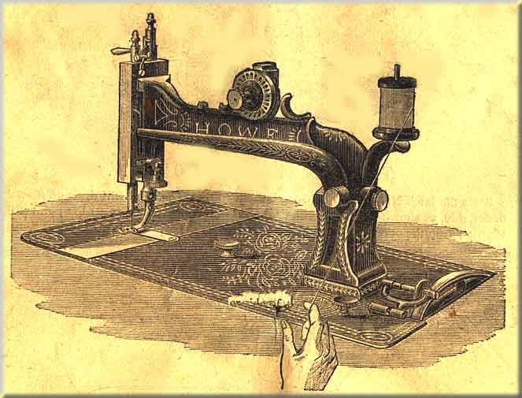
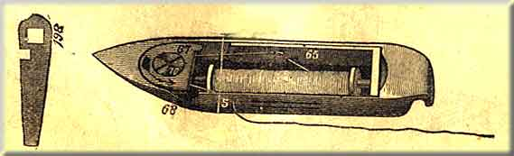
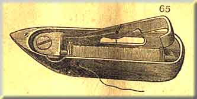

Enter the hinge rubbers No. 241 into holes in back part of table at 241. Enter table rubbers No. 11 into holes No. 11 in front part of table.
Place Bed Plate Rubbers No. 10 on the pins No. 10 on the front corners of the machine. Attach hinges No. 239 (see Fig. 2, page 7), to the machine, and enter them into the rubbers No. 241 in the table; turn the machine down, as shown in Fig. 3, page 8; pas the belt around the groove of the driving wheel No. 144 and pulley Np. 13, sufficiently tight to drive the machine.
The belt should be thrown off when machine is not in use, and if it becomes too loose to drive the needle through heavy goods, shorten it by cutting about half and inch off one end where it is joined together, punch a new hole, and fasten as before.
Slip the belt off driving-wheel No. 144, turn the machine back on its hinges, as shown in Fig. 1, page 6, oil all the bearings indicated by the numbers, beginning with No. 1, taking the figures in their regular order, 1, 2, 3, 4, and so on to 21. In this way you will be sure to find every place requiring oil, and avoid oiling the same place more than once. To oil the stand, commence at No. 1, Fig. 3, page 8, taking the numbers in their regular order to No. 6. Care should always be taken, before commencing to operate, that the running parts are well cleaned and oiled. No part can be permitted to run dry without detriment to the machine.
NOTE -- Use good oil -- pure sperm is the best. Poor oil will gum, and cause the machine to run heavily. Spirits of turpentine or kerosene oil will be found useful in cleaning the machine after using bad oil.
Take the belt off; place the chair near enough to the machine to keep the body erect while operating. Place the feet on the treadle with the instep directly over the treadle-rod No. 154. Start the driving wheel No.144 from you in the direction of the arrow and keep turning by gently pressing on the treadle with the heel and toe alternately, until you have full control of the treadle motion.
To work the machine, remove the front slide 113, and take out the shuttle; raise the presser foot No. 102, by turning the handle 60 from you, put on the belt, start the driving wheel as before, and work the machine until you have become familiar with the motion. Without having the shuttle in or the machine threaded, place a piece of material under the needle; let the presser foot down by moving handle 60 toward you, aand run the machine with the presser foot down on the feed without having goods between them, and do not attempt to sew until you can turn the machine regularly, and start and stop it with ease. After becoming familiar with the motion and before proceeding to sew, clean both the machine and stand, and wipe all waste off from the lower end of the needle bar and out of the shuttle race.

It is always advisable, when winding, to detach the large pulley from the small one by pulling out the eccentric nut pin, so that in working the treadle only the large pulley revolves; then press forward the winder, so that the rubber ring (217) presses on the large pulley.
Put the thread through the hole in the bobbin flange; then press the bobbin (71) against the spooler step, pressing it back to admit of the other end going into the hole in the spindle, and driving pin into the hole in the bobbin flange.
NOTE -- Never use glazed threads in the shuttle.
With this new winder, the spindle stem is put in with the accessories, so that it does not interfere with putting the half case on the machine when wanted; but when it is required to wind spools, the screw is taken out of the spindle and the end of the stem inserted.
The hand appliance wheel is not given with the machine, but is sold as an extra attachment, and when put on the machine, the winder must be moved, so that the rubber will press against the hand wheel, somewhat similar to the arrangement on the hand machine.
Raise the latch No. 65, and hold the bobbin so that the thread will draw off from the under side, as shown in Fig. 6; enter one end into the small hole near the point of the shuttle; drop the other end into the heel, and close the latch, as shown in Fig. 7
Pass the end of the thread "B" out through the bottom slot at No, 1, and back through the top slot at No. 2, thence through the top hole in the latch at No. 3, and back through the bottom hole in the latch at No. 4; hold the end of the thread "B" between the side of the shuttle and the finger at "A"; pass the loop thus formed between the tension plates at 68, and draw it around the tension screw No. 70, in the direction of the arrow, coming out between the plates at 67; draw up the slack, and pass the end of the thread "B" out through the hole in the side of the shuttle at No. 5. Be sure to have the thread between the tension plates 67 and 68, and not under them.
This shows the shuttle fully threaded, and so plain that if the learner will but follow the line of thread with the eye it will be impossible to make a mistake.
Except where a very delicate tension is required, omit threading through the slots at No. 1 and No. 2, as in Figs. 7 and 8, and thread as shown in Fig. 9.
Fig. 9

Have the thread leading from the under side of the bobbin, and out through the lower hole in the latch 65, and back through the top hole, thence between the tension plates and out through the side of the shuttle at 5, as shown in the cut.

In order to further facilitate the threading of the shuttle, we are supplying with our hand, and some of our treadle machines, shuttles with a latch (No. 65), same as in Fig. above, whcih does away with passing the cotton through slots 1 and 2 and holes 3 and 4, as shewn in Fig. 8. Coarse glacé thread should not be used in this shuttle.